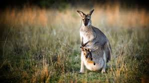
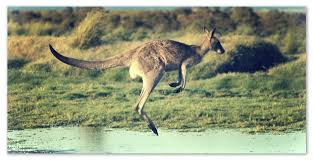

У кенгуру большие, мощные задние ноги, большие ступни, приспособленные для прыжков, длинный массивный хвост для равновесия и маленькая голова. Как и у большинства сумчатых, у самок кенгуру есть мешочек, называемый сумкой, в котором детеныш завершает послеродовое развитие.
Питаются кенгуру преимущественно растительной пищей.Сумчатые также употребляют в пищу корни и клубни растений, плоды и ягоды. Для некоторых видов привычным является употребление червей или насекомых.
 